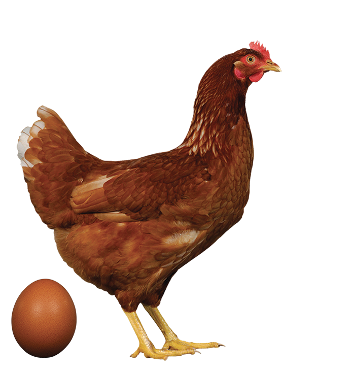
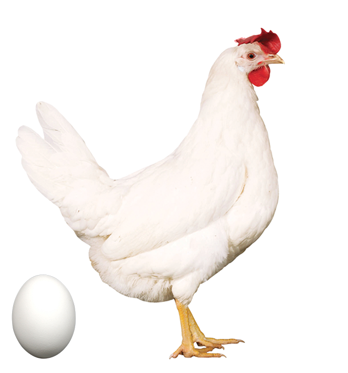

NOVOGEN BROWNovos marrons, adaptação e manejoSaiba maisNovogen Brasil
Genética de postura com base técnica e presença no campo brasileiro.
A Novogen reúne pesquisa, acompanhamento técnico e leitura das condições locais para apoiar decisões consistentes na produção de ovos.
01
Pesquisa aplicada
02
Adaptação ao sistema
03
Acompanhamento técnico
04
Consistência produtiva
Linhagens
Genéticas para ovos brancos, marrons e coloridos.
Conheça as linhagens NOVOGEN para diferentes mercados, sistemas produtivos e objetivos de manejo.

NOVOGEN WHITEovos brancos, persistência e eficiênciaSaiba mais NOVOGEN TINTEDovos coloridos, robustez e versatilidadeSaiba mais
NOVOGEN TINTEDovos coloridos, robustez e versatilidadeSaiba mais
A Novogen
Genética de postura com pesquisa global e leitura do campo brasileiro.
A Novogen atua no desenvolvimento de linhagens para produção de ovos, conectando seleção genética, dados produtivos e acompanhamento técnico. No Brasil, essa presença ganha valor quando o conhecimento global encontra a realidade das granjas, dos sistemas de produção e das condições de mercado.
Saiba mais
Pesquisa global
Campo brasileiro
Dados, manejo e acompanhamento técnico conectados à rotina da granja.
Pesquisa aplicada
Pesquisa genética orientada a resultados observados em campo.
A atuação da Novogen parte de programas de seleção, dados produtivos e diálogo com equipes técnicas para aproximar genética, manejo e contexto regional.
Critérios técnicos
A comunicação prioriza indicadores, guias de manejo e informações verificáveis para apoiar comparações responsáveis.
Conhecimento acessÃvel
Conteúdo técnico apresentado de forma clara, com foco em decisões de manejo, ambiência, nutrição e acompanhamento do lote.
Adaptação ao sistema
Cada granja tem um contexto. A escolha genética precisa considerar esse contexto.
O portfólio Novogen é apresentado a partir de critérios produtivos, sistemas de alojamento e objetivos de manejo, sem reduzir a decisão a um único indicador.
Gaiola
Parâmetros de produção, persistência e qualidade de casca avaliados dentro da rotina de operações intensivas.
Livre
Atenção a comportamento, viabilidade e estabilidade em sistemas alternativos ou com maior liberdade de movimento.
Em transição
Leitura técnica para apoiar granjas que ajustam instalações, manejo ou modelo produtivo ao longo do tempo.
Acompanhamento técnico
Presença técnica para acompanhar decisões ao longo do ciclo produtivo.
A relação com produtores e equipes técnicas é construÃda com acompanhamento, troca de dados e orientação compatÃvel com a realidade de cada operação.
- Interlocução técnica com responsáveis pelo manejo e pela produção.
- Uso de informações de campo para orientar recomendações e ajustes.
- Acompanhamento em fases crÃticas do lote e em momentos de mudança operacional.
Consistência produtiva
Resultados dependem da interação entre genética, ambiente, nutrição e manejo.
Ambiente
Atenção a estabilidade produtiva em regiões quentes, com leitura de consumo, viabilidade e resposta do lote.
Manejo
Leitura técnica de ambiência, nutrição, sanidade e comportamento para corrigir rota sem improviso.
Evolução
Acompanhamento de mudanças produtivas, regulatórias e comerciais que influenciam o planejamento das granjas.
Radar de Mercado
Indicadores para acompanhar preço, insumos e contexto produtivo.
Um resumo para leitura rápida do mercado, com acesso à página dedicada com widget CEPEA completo.
Novogen Partners
Materiais e acompanhamento para apoiar decisões técnicas.
Guias de manejo
Recomendações práticas por fase, sistema e objetivo produtivo.
Acompanhamento técnico
Contato técnico para discutir indicadores, ocorrências de campo e pontos de ajuste.
Perguntas técnicas
Informações organizadas para produtores, técnicos e canais digitais consultarem com consistência.
Contato
Converse com a equipe Novogen Brasil.
Entre em contato para discutir sistema de produção, condições locais, objetivos do lote e informações técnicas sobre as linhagens.
FAQ técnico
Informações objetivas para orientar a escolha genética.
Como avaliar a linhagem mais adequada?
A avaliação deve considerar sistema de produção, ambiência, nutrição, metas produtivas, histórico do lote e acompanhamento técnico disponÃvel.
Por que o contexto brasileiro importa?
Temperatura, custo de ração, sanidade, ambiência e modelo de alojamento influenciam diretamente o desempenho observado em campo.
Como a Novogen acompanha o produtor?
O acompanhamento combina orientação técnica, leitura de dados produtivos e diálogo com as equipes responsáveis pelo manejo.